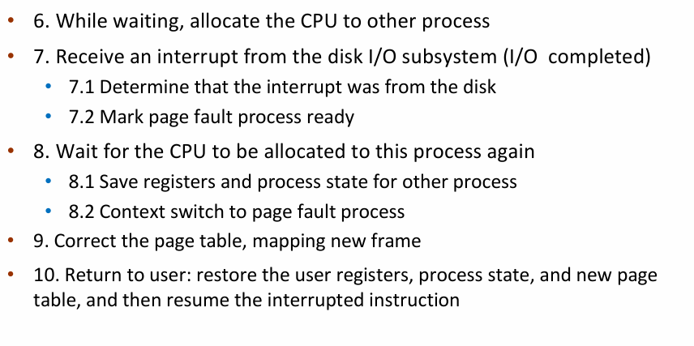

Virtual Memory¶
约 2406 个字 预计阅读时间 8 分钟
Introduction¶
代码需要在内存里执行，但是整个程序几乎不会同时被使用。比如我们的代码在 3 页里，最开始执行时只有第一页在内存里，后面的页需要在需要的时候才会被加载到内存里。即我们可以把还没用到的 code 和 data 延迟加载到内存里，用到时再加载。
Consider ability to execute partially-loaded program:
- program no longer constrained by limits of physical memory.
- programs could be larger than physical memory
需要注意的是虚拟地址只是范围，并不能真正的存储数据，数据只能存在物理空间里。
Kernel Addresses & Userspace Addresses
每个进程的虚拟地址空间被分为了 kernel portion 和 user portion. Kernel 代码可以访问这两块空间，而 user 代码只能访问 user portion.
每个进程的 AS 的 kernel portion 都映射到了同一块物理内存1。原因是显然的：所有进程用到的都是同一套 kernel，因此没必要把 kernel 用的内存（存例如各个进程的页表、各种队列之类的东西）复制好几份。
在 32 位虚拟地址空间的设计中，kernel 默认使用高 1GB, 各个进程的 user portion 使用低 3GB 的虚拟地址空间。
而对于 64 位虚拟地址空间的设计，由于根本用不了这么多，因此 kernel space 和 user space 被自然分隔开。
Demand Paging¶
操作系统在分配 user space 的内存时，会使用 lazy allocation：当用户程序申请一块内存时，操作系统并不会真的立即在物理内存中分配对应的内存；直到这块内存被真正访问。
- if page is invalid (error) -> abort the operation.
- if page is valid but not in memory -> bring it to memory.
- memory heres means physical memory!
- this is called page fault
What causes page fault?¶

以 C 语言中的 malloc 为例，malloc 会调用 brk(). 增长堆的大小。
VMA 是 Virtual Memory Area，brk() 只是增大了 VMA 的大小（修改 vm_end），但是并没有真正的分配内存，只有当我们真正访问这个地址的时候，会触发 page fault，然后找一个空闲帧真正分配内存，并做了映射。
user space 的访存，MMU 引起的 page fault.

Who handles page fault?¶
有两种情况：
- 地址本身超过了
vma的范围，或者落在 heap 里但权限不对，这种情况操作系统会杀死进程。 - 落在 heap 里，权限正确，这个时候 os 就分配一个空闲帧，然后把这个页映射到这个帧上。

每个 fault 过来先查是否在 vm_start, vm_end 之间，以及查权限。如果落在 vm_area_struct 中间，那么就是 segmentation fault. 为了判断地址是否落在 vma 里，linux 使用红黑树来加速查找。

首先 MMU 找 page table 发现 invalid, 之后引发 trap, OS 在 physical memory 中找到一个空闲的帧，把需要的内容从磁盘搬过来，然后修改 Page table, 最后重新开始 instruction, MMU 重新开始找 page table.

- swapper
- lazy swapper: never swaps a page in memory unless it will be needed.
- pre-paging: pre-page all or some of pages a process will need, before they are referenced.
- it can reduce the number of page faults during execution.
- if pre-pages are unused, I/O and memory was wasted.
在被需求之前页不会被载入内存，只有在内存被需求后才会被载入内存，我们称之为纯按需换页(pure demand paging)
- major page fault: 缺了的页不在内存中
-
minor page fault: 缺了的页在内存中存在，只不过没在当前页表中建立映射。
-
get free frame
- most operating systems maintain a free-frame list: a pool of free frames for satisfying such requests.


读硬盘的时候很慢，所以换进程，把 CPU 给别人，context_switch

Demanding Paging Optimizations¶
Copy-on-Write¶
allows parent and child processes to initially share the same pages in memory.
提升 fork 效率，最开始页都是共享的，只有当父进程或子进程修改了页的内容时，才会真正为修改的页分配内存。

Page Replacement¶
当 free-frame 不足时，我们需要进行替换。换谁？
find some page in memory, but not really in use, page it out.
Page Replacement Mechanism¶
Page Fault Handler(with Page Replacement):
To page in a page:
- find the location of the desired page on disk
- find a free frame
- if there is a free frame, use it.
- if there is none, use a page replacemente polilcy to pick a victim frame, write victime frame to disk if dirty.
- bring the desired page into the free frame; update the page tables
- restart the instruction that caused the trap
Page Replacmenet Algorithms¶
如何评价一个算法好坏：用一串 memory reference string，每个数字都是一个页号，给出物理页的数量，看有多少个 page faults.
- First-In-First-Out: replace the first page loaded.
- 内存中维护一个 FIFO 队列来实现
- 缺点：先被载人的 page 也可能会被频繁使用。
- adding more frames can cause more page faults. (Belady's Anomaly)
- Optimal Algorithm: replace page that will not be used for the longest time. (在未来最久的时间内不会被访问到的页作为 victime)
- 但是我们预测不了，所以只是理论最优。
- Least Recently Used(LRU): replaces pages that have not been used for the longest time.
- counter-based
- every page table entry has a counter(时间戳，每次访问这个页的时候更新时间戳。需要驱逐的时候找时间戳最小的页)
- every time page is referenced, copy the clock into the counter
- when a page needs to be replaced, search for page with smallest counter.
- stack-based
- keep a stack of page numbers(in double linked list)
- when a page is referenced, move it to the top of the stack
- least used frame 总是位于序列尾部，因此不需要额外的搜索。
- LRU Approximation Implementation
- 计数器做法，维护 clock 很慢，并且对于两者没访问内存的时候都需要维护，如果通过 interrupt 来调用 algorithm, 开销很大。
- LRU approximation with a reference bit
- when page is referenced, set the bit to 1(done by hardware)
- replace any page with reference bit = 0 (if one exists)
- we do not know the order however.
- Additional-Reference-Bits Algroithm
- 8-bits byte for each page
- During a time interval (100ms), shifts bit rights by 1 bit, sets the high bit if used, and then discards the low-order bit
- Second chance algoriithm(clock-replacement)
- if page to be replaced has
- reference bit = 0 -> replace it
- reference bit = 1 then: set reference bit 0, leave page in memory, replace next page subjecting to the same rules.
- if page to be replaced has
- counter-based
- Counting-based Page Replacement
- keep the number of references made to each page(counter 记录正在使用的frame 被使用的次数)
- Least Frequently Used(LFU) replaces page with the smallest counter
- Most Frequently Used (MFU) replaces page with the largest counter
- not common.
Page-Buffering Algorithms¶
Keep a pool of free frame: 维持一个空闲帧的 pool, 当需要的时候直接从 pool 里取一个。
Allocation of Frames¶
Each process needs minimum number of frames - according to instructions semantics.
如何给不同的进程分配 frame:
- equal allocation
-
proportional allocation: allocate according to the size of process.
-
Global replacement – process selects a replacement frame from the set of all frames; one process can take a frame from another. 可以抢其它进程的帧。
- Reclaiming Pages: page replacement is triggered when the list falls below a certain threshold. 如果 free list 里的帧数低于阈值，就触发 page replacement。这个策略希望保证这里有充足的自由内存来满足新的需求。
-
Local replacement – each process selects from only its own set of allocated frames.
Thrashing¶
内存管理不善导致 CPU 利用率过低,具体来说： 倘若系统的多道程度过高，那么可能分配给每一个 process 的 frames 数量就会比较少，process 所使用的 frames 中被频繁使用的 page 占比更大。这时候可能就会产生较为频繁的 paging 活动——几乎所有 frames 都正在被使用，相当于每次置换都会导致一个新的 page fault——进而导致 CPU 的利用率下降，这种现象被称为抖动(thrashing)。
例如，process A 可能抢走了 process B 的正要被使用的 frame，于是导致 process B 之后会产生一次 page fault；而在处理这个 page fault 的时候，可能又把 process C 的正要使用的 frame 给抢走了.
Why does thrashing occur?: total memory size < total size of locality(一个 locality 大小比内存大，因此我们不得不一直换进换出页。)
使用 working set model 来解决 thrashing:
- working-set window(\(\Delta\)): a fixed number of page references
- 把所有 locality 称为一个工作集，windows 是一个关于时间的窗口，代表最近 \(\Delta\) 次对页面的访问。
- Working set of process \(p_i\) total number of pages referenced in the most recent \(\Delta\)
- Total working sets: \(D=\sum \text{WSS}_i\)
- approximation of total locality
- if \(D>m\), possibility of thrashing(即所有进程的 working set 的大小之和大于可用 frame 的数量，那么就可能会出现 thrashing)
- to avoid, if \(D>m\), suspend or swap out some processes.
- 确定一个进程频繁访问的页面，保证这些页面不被换出；需要调页时从剩余的页面进行交换。如果频繁访问的页面数已经大于了当前进程可用的页面数，操作系统就应当把整个进程换出，以防止出现抖动现象。
-
Keeping track of the working set
-
Page-Fault Frenquency
- 缺页频率，PFF 与进程可用的 frame 数量大致成负相关，我们可用设定当 process 的 PFF 过高的时候增加它可用的 frames 数量，当 process 的 PFF 较低的时候可以减少它可用的 frames 数量。
Memory Managment in Linux¶
一个进程有自己的 mm_struct,所有线程共享同一个页表，内核空间有自己的页表 swapper_pg_dir, 这里的 pgd (page global directory) 存的是虚拟地址，加载到 satp 的时候会转化为物理地址。
-
Buddy system
- 可以用来分配物理连续的内存，每次分配内存大小是 2 的幂次，例如请求是 11KB, 则分配 16KB。
- 当我们进行分配的时候，从物理段上切分出对应的大小，并且每次切分都是平分。
- 当它被释放时，会合并(coalesce) 相邻的块形成更大的块供之后使用。
-
Slab Allocation
- Slab allocator is a cache of objects
- a cache in a slab allocator consists of one or more slabs.
- A slab contains one or more pages, divided into equal-sized objects.
预先了解到 kernel 内的常见数据结构(称作 object)的大小，并预先准备好对应粒度的小内存块，注册到每类 Object 的 cache 里。当一个 object 需要使用内存时，我们就查询对应 cache 里是否有空闲的内存块，如果有就分配，没有就向 buddy system 申请。
创建日期: 2024年11月4日 20:14:30